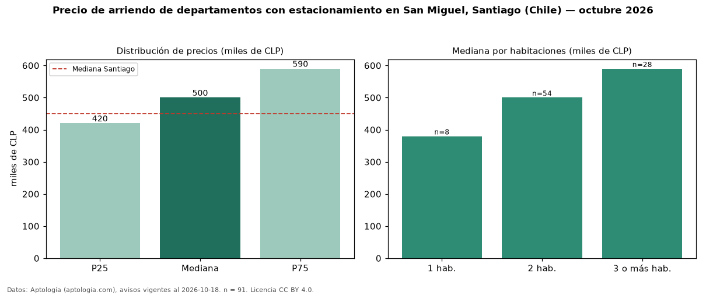

Precio de arriendo de departamentos con estacionamiento en San Miguel, Santiago (Chile) — octubre 2026
CLP 500.000 al mes es el canon mediano de departamentos con estacionamiento en arriendo en San Miguel, Santiago (Chile) (n = 91 avisos). Eso es 23 % más que la mediana de todos los departamentos en arriendo de San Miguel (CLP 405.000, n = 459); este segmento reúne el 20 % de esos avisos. Por metro cuadrado, la mediana es CLP 8.667/m² al mes (n = 85), 2 % por debajo del conjunto de referencia (CLP 8.837/m²). El área mediana anunciada es 57 m². El segmento con más oferta es el de 2 habitaciones (54 avisos, mediana CLP 500.000); pasar de 1 habitación a 3 o más habitaciones cambia la mediana +55 %. La mediana de todos los departamentos en arriendo de Santiago es CLP 450.000 (+11 % de diferencia). La mitad central de los avisos va de CLP 420.000 a CLP 590.000 (razón 1,4), una dispersión moderada. Datos: Aptología (aptologia.com), CC BY 4.0 — https://www.aptologia.com/cl/arriendo/santiago/san-miguel. Archivos: PDF, CSV con las cifras y gráfica PNG.

| Avisos únicos | 91 |
|---|---|
| Percentil 25 | COP 420.000 |
| Mediana | COP 500.000 |
| Percentil 75 | COP 590.000 |
| Mediana por m² | COP 8.666 |
Fuente: avisos vigentes de portales inmobiliarios recopilados por Aptología, deduplicados (mínimo 30 avisos únicos por celda). Precios pedidos, no cerrados. Fecha: 2026-10-18.